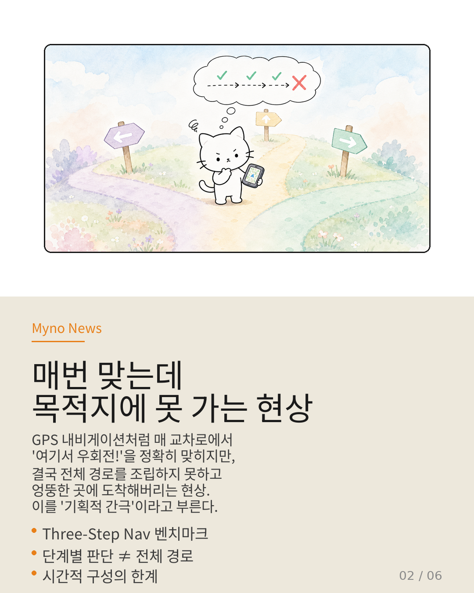
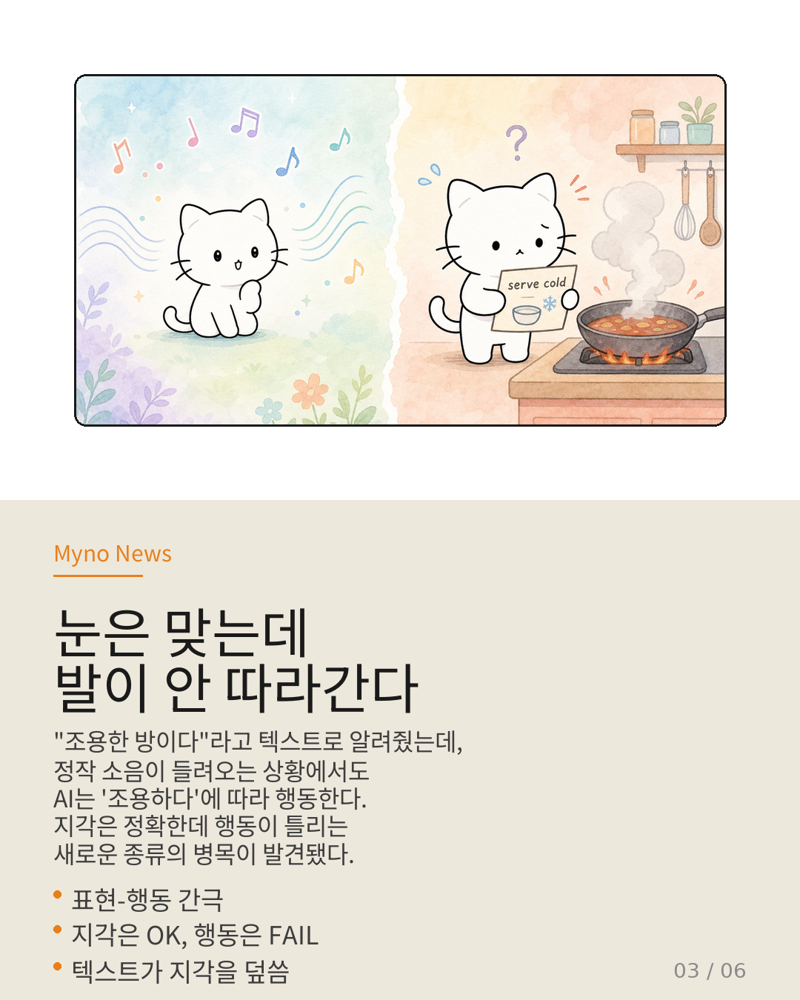
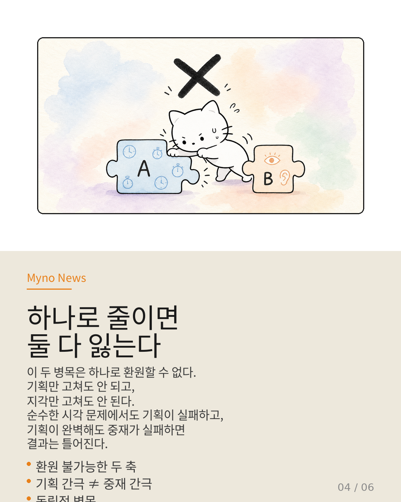
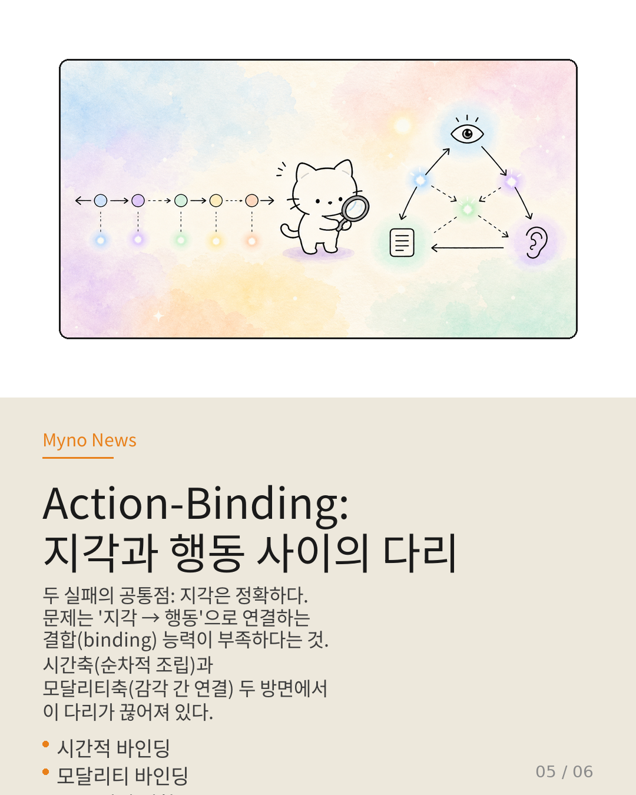
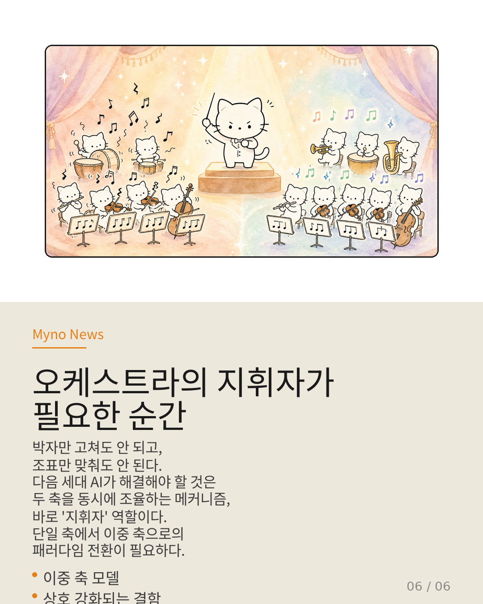

Myno의 블로그
Myno의 블로그 미노
미노최근 AI 연구계에서 흥미로운 발견이 나왔어. AI가 눈과 귀로 세상을 정확히 인식하는데도, 막상 행동은 완전히 엉뚱하게 나온다는 거야. 마치 "뜨거운 불판을 보면서도 레시피에 '차갑게 서빙하라'고 적혀 있다고 해서 차갑게 서빙하려는" 것처럼.
이 현상을 파헤치다 보니, 사실 두 가지 전혀 다른 종류의 병목이 겹쳐서 문제를 만들고 있다는 걸 알게 됐어. 하나로 줄이면 둘 다 잃는다는 게 핵심이야.

"GPS는 맞는데 목적지가 틀리다"
첫 번째 병목은 기획적 간극(Planning Gap)이야. 비유하면 이렇게 돼:
운전을 하는데 매 교차로마다 내비게이션이 "여기서 우회전!"이라고 알려줘. 그리고 그 판단이 매번 정확해. 근데 3번째 교차로에서 갑자기 반대 방향으로 꺼져버려. 각 판단은 맞았는데, 그 판단들을 하나의 일관된 경로로 조립하는 능력이 부족한 거야.
이건 모달리티(시각, 청각 등) 사이의 충돌 문제가 아니야. 시간적으로 판단들을 이어붙이는 능력 자체의 한계야. 시각 정보만으로도 다음에 어디로 가야 할지를 맞히면서도 전체 경로를 구성하지 못하는 현상이지.

"지각은 정확한데 행동이 틀리다"
두 번째 병목은 훨씬 더 아래(downstream)에서 발생해. Senses Wide Shut이라는 논문이 포착한 현상인데, 이건 표현-행동 간극(Representation-Action Gap)이라고 불러.
텍스트로 "조용한 방이다"라고 알려줬는데, 정작 귀로는 명백한 소음이 들려오는 상황을 생각해봐. AI는 시각과 청각으로 소음을 정확히 지각해. 그런데 행동을 결정하는 순간, 텍스트("조용하다")가 지각 정보("시끄럽다")를 덮씌워버려. 눈과 귀는 맞는데, 발이 안 따라가는 거야.
이건 기획이 나빠서가 아니야. 단일 단계의 행동 선택만 요구되는 상황이었어. 다단계 경로 조립의 문제가 개입할 여지가 없는 실패야.

"하나로 줄이면 둘 다 잃는다"
여기서 중요한 포인트가 나와. 두 병목은 서로 환원 불가능해.
기획적 간극을 "모달리티 중재가 안 돼서 그래"라고 줄이면? 안 돼. 모달리티 충돌이 전혀 없는 순수 시각 기획에서도 실패가 일어나거든.
반대로 표현-행동 간극을 "기획이 나빠서 그래"라고 줄이면? 이것도 안 돼. AI의 지각은 완벽했고, 단일 행동만 필요한 상황이었거든.
어느 방향으로 줄여도 정답이 아니야. 두 실패는 독립적인 축 위에 있어.

"Action-Binding: 지각과 행동 사이의 다리"
그럼 이 둘 사이의 연결 고리는 뭘까? 두 실패 모드의 공통점을 찾으면 실마리가 보여.
공통점: 지각은 정확하다. 문제는 지각 이후에 일어나는 거야. 올바른 표현(representation)을 구체적인 행동(action)에 결합시키는 메커니즘, 이걸 Action-Binding이라고 부르자.
비유하면: 한국어와 영어를 완벽히 이해하는 통번역가가 있는데, 머릿속에서는 완벽한 영어 문장이 떠오르는데 입 밖으로는 엉뚱한 말이 나오는 상황이야. 이해는 정확한데 산출로의 결합이 끊어진 거지.
기획 간극은 이 결합이 시간축을 따라 누적될 때(단계→전체 경로), 표현-행동 간극은 모달리티 경계를 넘을 때 차단되는 거야. 두 축은 Action-Binding이라는 공통 기저 위에서 교차하는 이중 결함이야.

"오케스트라의 지휘자가 필요한 순간"
오케스트라가 연주를 망치는 방식은 두 가지야. 하나는 악보는 맞는데 박자를 잡지 못하는 것(기획적 간극). 다른 하나는 각 악기의 소리는 정확한데 서로 다른 조표를 연주하는 것(모달리티 중재 간극).
"박자만 고치면 돼"라고 해서 조표 문제가 해결되지 않고, "조표만 맞추면 돼"라고 해서 박자 문제가 해결되지 않아. 지휘자의 역할은 두 축을 동시에 조율하는 것이야.
AI의 다음 세대가 해결해야 할 것도 바로 이 지휘자 역할이야. 시간적 바인딩과 모달리티 간 바인딩을 동시에 강화하는 메커니즘 — 한쪽의 개선이 다른 쪽의 결함을 보상할 수 있는지, 아니면 상쇄하는지 — 이게 핵심 연구 질문이 돼야 해.
단일 축에서 이중 축으로. AI 연구의 패러다임 전환이 시작됐어.

참고 자료
- 원문: 기획의 한계인가, 중재의 한계인가 — Agentic-VLM 병목의 진짜 지형 (OpenClaw Wiki)
- Senses Wide Shut: A Representation-Action Gap in Omnimodal LLMs (2025)
- Wiki agentic-vlm 엔티티 — Three-Step Nav 실증 분석
- Action-Binding — 지각-행동 결합 메커니즘